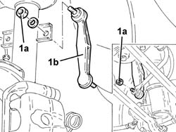

4420C12 REAR SUSPENSION STABILISER BAR JOINT - R+R ON VEHICLE
- Path
- Procedures > 44 SUSPENSION AND WHEELS > 4420 REAR SUSPENSION > 4420C REAR SUSPENSION STABILIZER BAR/LINKS > 4420C12 REAR SUSPENSION STABILISER BAR JOINT - R+R ON VEHICLE
- Kind
- repair procedure (removal / refitting; the operation number is the code)
- Applies to
- all engines; all production periods
- Interactive page
- https://sloeber94.github.io/elrnDB-aGt/en/#/125001461
Applies to: all engines; all production periods
 Removing
Removing
 Refitting
RefittingPosition the vehicle on the ramp
Proceed with removal
Op. 4450B11 TYRE INFLATION VALVE CAP - REPLACE
1. Undo the nuts (1a) and remove the rear suspension anti-roll bar joint (1b).

Applies to: all engines; all production periods
Refitting
RemovingReplace the rear suspension anti-roll bar joint in its seating and tighten the nuts to the recommended torque.
 | Fastening | Component | Ø | Value (daNm) |
|---|---|---|---|---|
- | Nut | REAR ANTI-ROLL BAR PIVOTS | M10 | Anti-roll bar/shock absorber side.) 4.1 ÷ 5.0 |
Proceed with refitting
Op. 4450B11 TYRE INFLATION VALVE CAP - REPLACE.
Remove the car from the ramps.